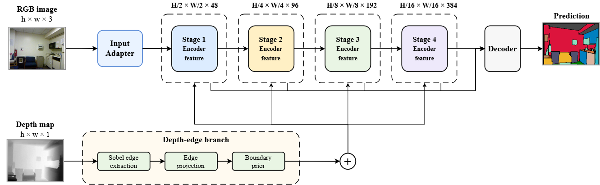
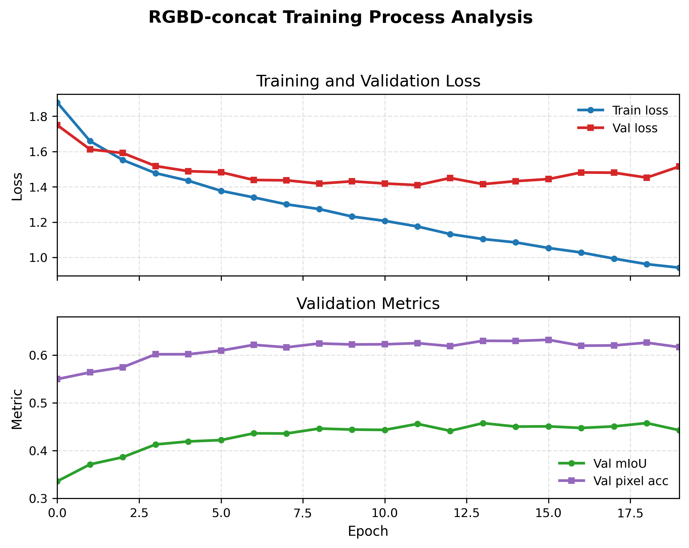
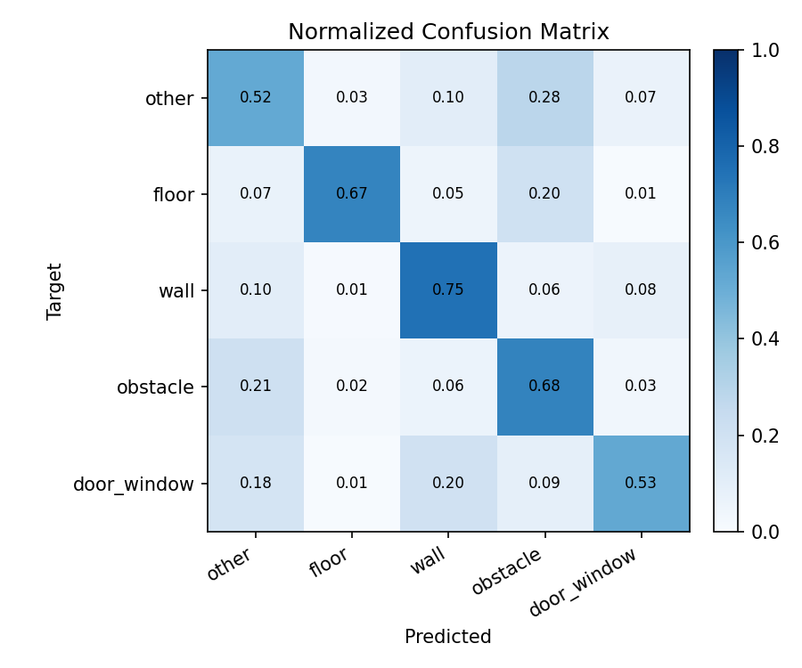
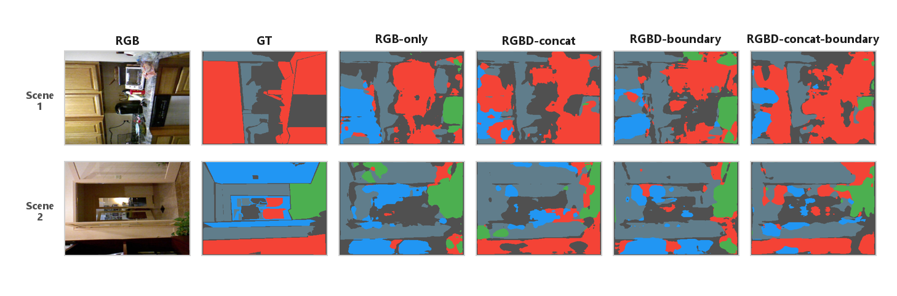
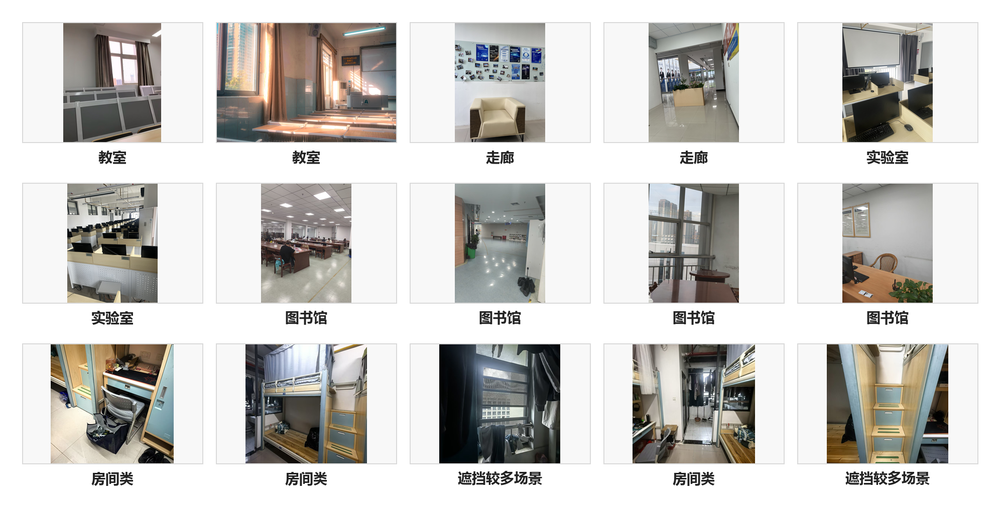
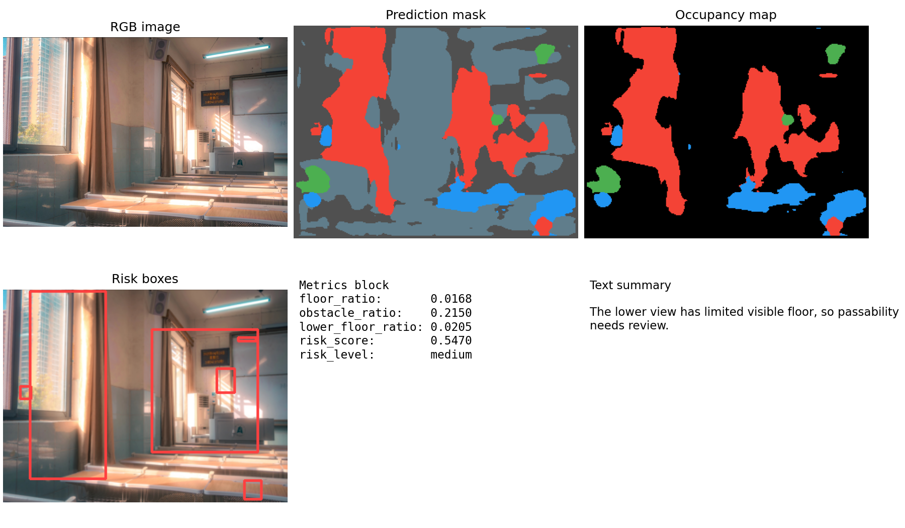
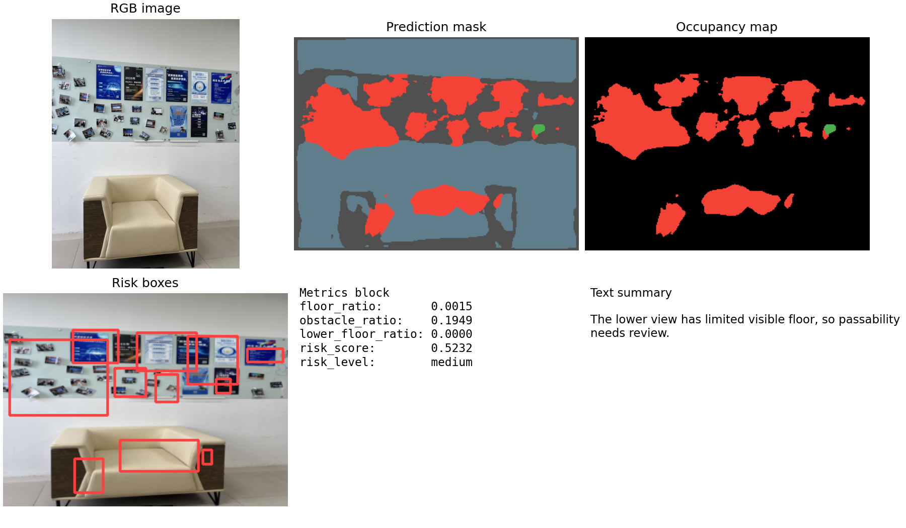
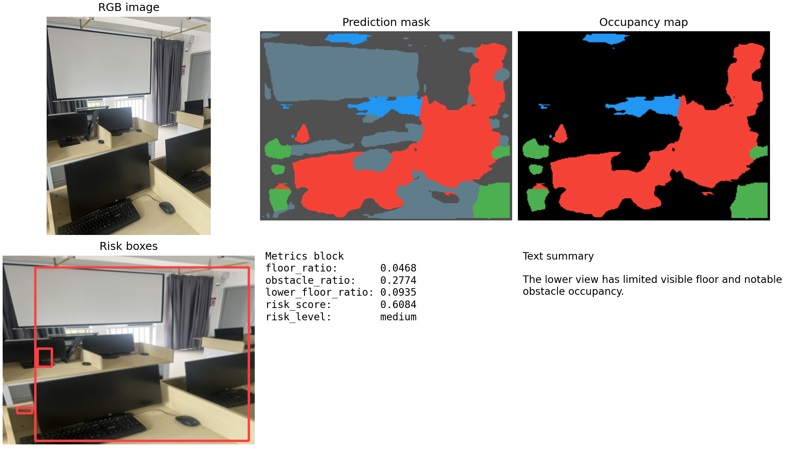
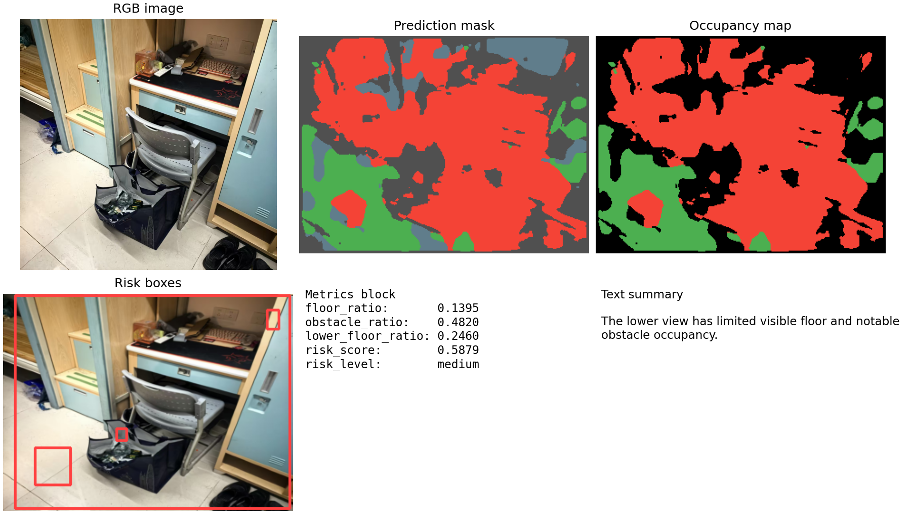

项目简介
本项目面向校园教室、走廊、实验室和公共空间等室内场景，完成轻量 RGB-D 语义分割与空间占用分析。系统输入 RGB 或 RGB-D 图像，输出五类语义分割结果， 并结合地面可见率和障碍物占比生成巡检提示。
五类标签
other
floor
wall
obstacle
door_window
Method
方法概览
CampusDepthSegLite 包含 MiniHierarchicalEncoder、Weighted-FPN Decoder 和可选 DepthBoundaryResidualFusion。模型通过四组变体比较 RGB、完整 depth 和 depth edge 对室内空间分割的影响。

Experiments
实验结果
四组实验均采用相同数据划分和训练设置。RGBD-concat 取得最佳整体性能； RGBD-concat-boundary 在 obstacle 类上表现更好，说明边界信息对障碍区域有一定帮助。
| 方法 | 输入 | mIoU | Pixel Acc | Mean Acc |
|---|---|---|---|---|
| RGB-only | RGB | 0.4226 | 0.5964 | 0.5881 |
| RGBD-concat | RGB + Depth | 0.4683 | 0.6318 | 0.6294 |
| RGBD-boundary | RGB + Depth | 0.4206 | 0.5974 | 0.5925 |
| RGBD-concat-boundary | RGB + Depth | 0.4605 | 0.6271 | 0.6191 |
RGBD-concat 取得最佳整体性能；RGBD-concat-boundary 在 obstacle 类上表现更好， 说明边界信息对障碍区域有一定帮助。
Visualization
训练过程与可视化



Campus Demo
自采集校园场景展示
说明：自采集校园图片没有像素级 GT，也没有真实 depth，仅用于定性展示，
不参与训练或定量评价，不计算 mIoU、Pixel Acc 或 Mean Acc。

教室场景

risk_score: 0.5470risk_level: medium
模型检测到下半区域可见地面较少，提示通行区域需要复核。
走廊场景

risk_score: 0.5232risk_level: medium
走廊区域中存在局部遮挡，系统给出中等风险提示。
实验室/公共空间场景

risk_score: 0.6084risk_level: medium
场景中障碍区域占比较高，适合用于展示风险框和占用图效果。
遮挡较多室内场景

risk_score: 0.5879risk_level: medium
画面中遮挡物较多，系统提示需要结合现场情况复核。
Limitations
局限性
Local Usage
本地运行方式
以下命令以项目根目录 campus-depthseg-lite 为当前目录。数据集、checkpoint 和 outputs 不随网页提交，需要在本地准备。
安装依赖
pip install -r requirements.txt测试集评估
python scripts\evaluate.py ^
--data_dir data\nyu5 ^
--split_file data\nyu5\splits\test.txt ^
--checkpoint outputs\runs\exp02_rgbd_concat_e20\checkpoints\best.ckpt ^
--variant rgbd_concat ^
--batch_size 4 ^
--accelerator cpu ^
--devices 1自采集场景展示
python scripts\predict_campus_demo.py ^
--rgb_dir data\campus_demo\rgb ^
--checkpoint outputs\runs\exp01_rgb_e20\checkpoints\best.ckpt ^
--variant rgb ^
--out_dir outputs\report_assets\campus_demo ^
--num_samples 8